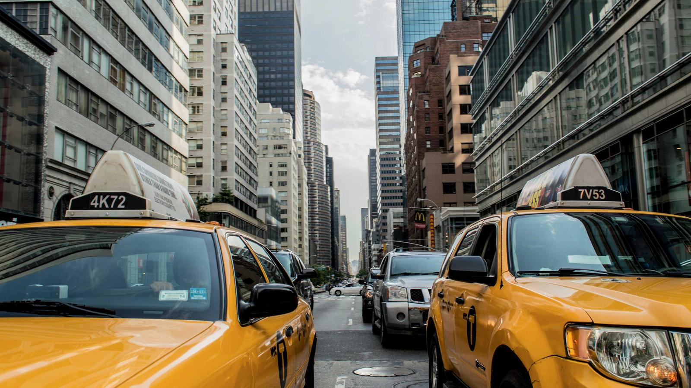

Introduction to Tecno's Concept Phone
Tecno’s latest concept phone is lit by neon, pushing the boundaries of mobile design and functionality. With a vibrant aesthetic reminiscent of the nightlife in urban cities, this device captures attention not just for its appearance but also for its innovative technology. The neon lighting reflects a deep commitment to integrating artistic flair with cutting-edge features, setting Tecno apart in an increasingly competitive market.
Unpacking the Neon Aesthetic
Neon lighting is not merely a trend; it represents a lively interaction between technology and visual art. The integration of neon colors into the phone's design aims to evoke feelings of nostalgia while appealing to a younger audience. This aesthetic can be seen as a way for brands, including Tecno, to reconnect with a generation that cherishes individuality and expression.
The incorporation of this design element can lead to various benefits:
- Brand Differentiation: In a sea of similar designs, neon elements make it memorable.
- Youth Appeal: Neon colors resonate with Gen Z and millennials who favor vibrant and expressive styles.
- Visual Engagement: The phone’s look encourages users to share their experiences on social media platforms, acting as a marketing tool.
Technical Specifications That Impress
Beyond its striking aesthetics, Tecno's concept phone boasts impressive technical specifications. Most notably, it features:
- A High-Resolution Display: The phone utilizes the latest display technology to offer crisp visuals perfect for gaming and media consumption.
- Long Battery Life: A powerful battery ensures extended use without the constant need for charging.
- Advanced Camera Capabilities: Enhanced functionalities for both photography and videography, offering users a comprehensive creative tool.
These specifications, combined with the unique design, position Tecno's concept phone as a strong contender in the smartphone landscape.
Market Trends in Smartphone Design
Tecno’s introduction of neon-themed designs aligns with broader market trends that emphasize personalization and aesthetics. Consumers are increasingly drawn to products that reflect their identity and lifestyle. Here's a closer look at emerging trends:
- Sustainability: Eco-friendly materials and sustainable production methods are becoming essential factors for buyers.
- Customization: The ability to personalize devices from colors to themes is becoming a standard expectation.
- Wearable Integration: Seamless connectivity between smartphones and wearable devices attracts health and tech enthusiasts alike.
Incorporating innovative designs while keeping these trends in mind will be crucial for success in 2026 and beyond.
Common Mistakes
When adopting new trends like those seen in Tecno’s latest concept phone, consumers and manufacturers alike can fall into several pitfalls:
- Neglecting User Experience: A dazzling design should not compromise functionality. Prioritizing looks over usability can frustrate users.
- Overlooking Market Preferences: Launching products based solely on aesthetics without considering target demographic preferences can lead to failures.
- Ignoring Feedback: Engaging with user feedback is essential. New features should evolve based on what users truly want and need.
- Underestimating Costs: While innovative features can attract attention, they can also escalate production costs if not carefully planned.
Action Plan for the Next 7 Days
For those intrigued by this exciting development in mobile technology, here’s a seven-day action plan:
- Day 1: Research the latest technology trends in smartphone design and consumer preferences to understand the market landscape.
- Day 2: Identify your personal or brand needs when it comes to mobile technology. What features matter most to you?
- Day 3: Follow influencers and tech reviewers who are discussing Tecno’s concept phone on social media platforms.
- Day 4: Engage with user forums and discussions to gather firsthand opinions about the features and aesthetics.
- Day 5: Create a mood board outlining your preferred designs, colors, and features inspired by neon aesthetics.
- Day 6: Consider how you can integrate aspects of this trend into your own tech or product usage.
- Day 7: Reflect on your findings and how they can influence your next smartphone purchase or tech-related decision.
Quick Checklist
As you contemplate the significance of Tecno’s design approach, use this checklist to ensure you’re covering essential aspects:
- Have you researched current smartphone trends?
- Are you considering user experience alongside aesthetics?
- Are you aware of features that matter to you?
- Have you engaged with tech communities for insights?
- Are you open to experimenting with your device's personalization options?
- Do you track how brands adapt to changing consumer demands?
FAQ
1. What is the significance of neon lighting in Tecno's concept phone?
The neon lighting not only enhances aesthetic appeal but also aims to connect emotionally with younger users who value expressive designs.
2. How does Tecno's approach to smartphone design differ from its competitors?
Tecno emphasizes bold aesthetics combined with robust features, setting a trend that prioritizes vibrant individuality, distinguishing itself in a crowded market.
3. Will the neon design be practical for everyday use?
While visually striking, Tecno is focused on ensuring that the aesthetic complements functionality, making it suitable for everyday usage.
4. Is this concept phone available for purchase?
As a concept phone, it is primarily a showcase of design and innovation, not necessarily available for purchase at this time, but may influence future releases.